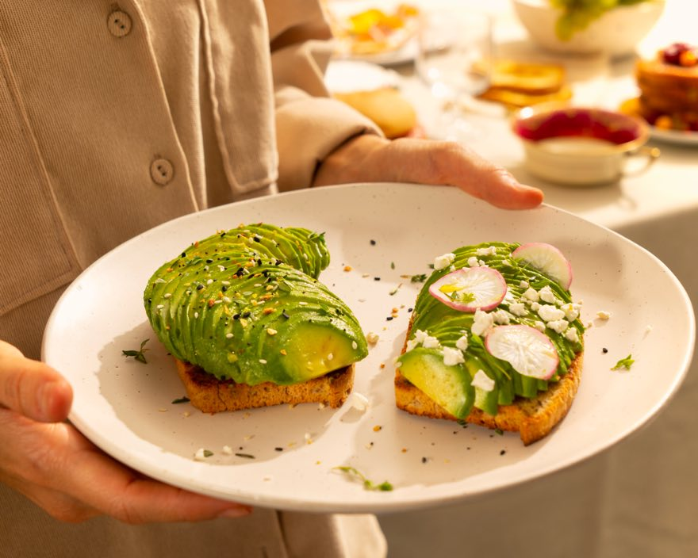

Comer Gluten Free hoy: qué es, para quién es y cómo se vive
Qué es comer Gluten Free, para quién nació y por qué hoy tanta gente lo elige. Una guía cercana, sin miedo al gluten y con mucho antojo de por medio.

Hace unos años, decir “yo como Gluten Free” en una cena con amigos era casi pedir una explicación larga. Caras de duda, preguntas, alguien que te ofrecía “solo un pedacito”. Hoy la conversación es otra. Hace poco compartimos en @truefood.cr un artículo de Revista Perfil, “Dieta sin gluten, más que una moda, una apuesta por el bienestar”, escrito por Ester Spencer. Nos gustó porque pone en palabras algo que vemos todos los días: lo que empezó como una necesidad médica hoy también es una elección.
Primero lo básico: ¿qué es el gluten?
El gluten es una proteína que está en el trigo, la cebada y el centeno. Es la que le da elasticidad a la masa y esa textura que asociamos con el pan de toda la vida. Y aquí queremos ser claras: el gluten no es el malo de la película. Para muchísima gente funciona perfecto. Lo que pasa es que hay cuerpos con los que simplemente no va, y para esas personas cambiar la forma de comer hace toda la diferencia.
¿Para quién nació?
Comer Gluten Free nació como una necesidad. Para quienes viven con celiaquía o con sensibilidad al gluten, evitarlo no es una opción ni una tendencia: es parte de su día a día. Si sospechas que el gluten no te cae bien, lo mejor es conversarlo con tu médico antes de sacar conclusiones por tu cuenta.
¿Y por qué hoy lo eligen más personas?
Hoy ya no son solo quienes lo necesitan. Cada vez más gente elige comer Gluten Free por bienestar, porque así se siente mejor con lo que come. No hay una sola razón ni una regla que aplique para todos: cada persona encuentra su manera y su ritmo. Lo que sí cambió es que ya no es algo raro ni algo que tengas que explicar en cada mesa.
Cómo se vive hoy
Aquí está el cambio más grande. Durante años, comer Gluten Free significaba resignarse: pan seco, que se desmoronaba, que sabía a cartón y que comías porque no había de otra. La idea era que ibas a tener que renunciar a algo. Eso ya no tiene por qué ser así. Hoy puedes tener tu tostada dorada en el desayuno, tu hamburguesa del viernes con gente en la casa, tu pizza con el queso estirándose y tu galleta recién salida del horno cuando el antojo llega sin avisar. Sin sentir que estás comiendo “la versión de segunda”. Por eso existe True Food. Hacemos pan y antojos para todo el que come rico, sea celíaco, sensible al gluten o simplemente alguien que quiere comer delicioso. Nuestro orden es claro: delicioso, saludable y Gluten Free. En ese orden. Si no es divino, no sale. Tenemos Pan Blanco para el día a día, Pan de Semillas (que además es vegano) para ese desayuno con aguacate, Pan Francés para la bruschetta o la sopa, Buns para la noche de hamburguesas, Pizza Crust para el pizza night y Galletas de cookie dough para cuando lo que se ocupa es un premio. Todo se hace en Costa Rica y llega congelado, así que lo compras hoy y lo disfrutas cuando se te antoje. Comer Gluten Free ya no es renunciar. Es elegir rico. Consíguenos en los congeladores de Auto Mercado, Walmart, Más x Menos, MegaSuper, BM y Compre Bien ❄️📍